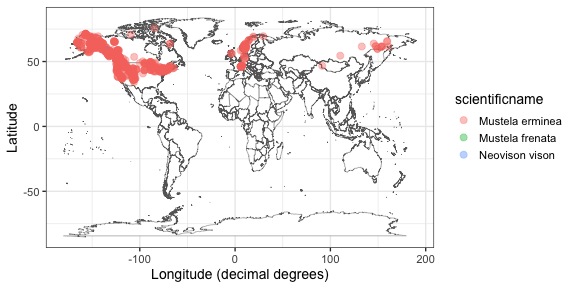

rvertnet is a client for interacting with VertNet.org.
Installation
You can install the stable version from CRAN:
install.packages("rvertnet")Or the development version from GitHub using the devtools package:
install.packages("devtools")
devtools::install_github("ropensci/rvertnet")Search by term
Search for Aves in the state of California, limit to 10 records
res <- searchbyterm(class = "Aves", state = "California", limit = 10, messages = FALSE)All major functions (searchbyterm(), spatialsearch(), vertsearch()) give back a meta (for metadata, in a list) and data (for data, in a data.frame) slot. The metadata:
res$meta
#> $request_date
#> [1] "2020-01-29T02:22:59.517328"
#>
#> $response_records
#> [1] 10
#>
#> $submitted_query
#> [1] "class:Aves"
#>
#> $request_origin
#> [1] "45.505106,-122.675026"
#>
#> $limit
#> [1] 10
#>
#> $last_cursor
#> [1] "False:CskFCtIDCqQD9wAAABn_____jIGJmo2LkZqL0o-QjYuek96WkZuah9LNz87M0s_H0s_H_wAA_3RtoKCZi4ygoP8AAP9dno-PmpGYlpGa_wAA_3N0bZaRm5qH_wAA_12biJz_AAD_c3Rtm5CcoJab_wAA_12ektCQjZGWi5eQk5CYhtDPz87GmcjGztLGzcbJ0svPzprSxsfGy9Kdycqcz53NnMfGnpv_AAD_c3-ektCQjZGWi5eQk5CYhtDPz87GmcjGztLGzcbJ0svPzprSxsfGy9Kdycqcz53NnMfGnpv_AAD__wD-__6MgYmajYuRmovSj5CNi56T3paRm5qH0s3PzszSz8fSz8f_AHRtoKCZi4ygoP8AXZ6Pj5qRmJaRmv8Ac3RtlpGbmof_AF2biJz_AHN0bZuQnKCWm_8AXZ6S0JCNkZaLl5CTkJiG0M_PzsaZyMbO0sbNxsnSy8_OmtLGx8bL0p3JypzPnc2cx8aem_8Ac3-ektCQjZGWi5eQk5CYhtDPz87GmcjGztLGzcbJ0svPzprSxsfGy9Kdycqcz53NnMfGnpv_AP_-EAohBN0EkB08Gxk5AAAAAOb___9IClAAWgsJJ5RN7qiPsmIQA2Cb0daDBxINRG9jdW1lbnRJbmRleBrAAShBTkQgKElTICJjdXN0b21lcl9uYW1lIiAiYXBwZW5naW5lIikgKElTICJncm91cF9uYW1lIiAic352ZXJ0bmV0LXBvcnRhbCIpIChJUyAibmFtZXNwYWNlIiAiaW5kZXgtMjAxMy0wOC0wOCIpIChJUyAiaW5kZXhfbmFtZSIgImR3YyIpIChPUiAoUVQgIkF2ZXMiICJydGV4dF9jbGFzcyIpIChJUyAicmF0b21fY2xhc3MiICJhdmVzIikpKToZCgwoTiBvcmRlcl9pZCkQARkAAAAAAADw_0oFCABA6Ac"
#>
#> $query_version
#> [1] "search.py 2016-08-15T16:43+02:00"
#>
#> $matching_records
#> [1] ">10000"
#>
#> $api_version
#> [1] "api.py 2017-11-24T12:16-03:00"The data
res$data
#> # A tibble: 10 x 46
#> kingdom recordedby higherclassific… stateprovince basisofrecord month decimallongitude phylum references year
#> <chr> <chr> <chr> <chr> <chr> <chr> <chr> <chr> <chr> <chr>
#> 1 Animal… NSW STATE… Animalia | Chor… New South Wa… PreservedSpe… 11 153.316 Chord… http://po… 1866
#> 2 Animal… TARONGA Z… Animalia | Chor… New South Wa… PreservedSpe… 6 151.33535 Chord… http://po… 2011
#> 3 Animal… MCLENNAN,… Animalia | Chor… Queensland PreservedSpe… 4 145.35 Chord… http://po… 1915
#> 4 Animal… WATTS, MI… Animalia | Chor… New South Wa… PreservedSpe… 1 146.016 Chord… http://po… 1983
#> 5 Animal… HOLCOMBE,… Animalia | Chor… New South Wa… PreservedSpe… 7 151.766 Chord… http://po… 1973
#> 6 Animal… RHODES, C… Animalia | Chor… New South Wa… PreservedSpe… 10 150.866 Chord… http://po… 1931
#> 7 Animal… C. HEDLEY… Animalia | Chor… Queensland PreservedSpe… 10 142.6 Chord… http://po… 1907
#> 8 Animal… ROBINSON,… Animalia | Chor… New South Wa… PreservedSpe… 10 149.266 Chord… http://po… 1897
#> 9 Animal… SHARP, GE… Animalia | Chor… Queensland PreservedSpe… 11 145.85 Chord… http://po… 1908
#> 10 Animal… J.A. KEAS… Animalia | Chor… New South Wa… PreservedSpe… 3 146.266 Chord… http://po… 1958
#> # … with 36 more variables: startdayofyear <chr>, taxonrank <chr>, specificepithet <chr>,
#> # bibliographiccitation <chr>, family <chr>, countrycode <chr>, geodeticdatum <chr>,
#> # coordinateuncertaintyinmeters <chr>, highergeography <chr>, accessrights <chr>, verbatimlocality <chr>,
#> # verbatimeventdate <chr>, day <chr>, eventid <chr>, collectioncode <chr>, occurrencestatus <chr>,
#> # locationremarks <chr>, coordinateprecision <chr>, institutioncode <chr>, scientificname <chr>, class <chr>,
#> # decimallatitude <chr>, occurrenceid <chr>, language <chr>, license <chr>, country <chr>,
#> # georeferenceverificationstatus <chr>, modified <chr>, eventdate <chr>, nomenclaturalcode <chr>, continent <chr>,
#> # genus <chr>, order <chr>, catalognumber <chr>, enddayofyear <chr>, vernacularname <chr>Search for Mustela nigripes in the states of Wyoming or South Dakota, limit to 20 records
res <- searchbyterm(specificepithet = "nigripes", genus = "Mustela", state = "(wyoming OR south dakota)", limit = 20, messages = FALSE)
res$data
#> # A tibble: 20 x 76
#> month decimallongitude startdayofyear accessrights kingdom verbatimcoordin… day identificationv… occurrenceid
#> <chr> <chr> <chr> <chr> <chr> <chr> <chr> <chr> <chr>
#> 1 1 -88.305352 1 http://vert… Animal… decimal degrees 1 legacy http://arct…
#> 2 03 -104.77472 74 http://vert… Animal… <NA> 15 legacy http://arct…
#> 3 02 -103.731861 52 http://vert… Animal… <NA> 21 legacy http://arct…
#> 4 12 -105.0137067407 349 http://vert… Animal… decimal degrees 15 field http://arct…
#> 5 2 -103.067931 32 http://vert… Animal… <NA> 1 legacy http://arct…
#> 6 1 -103.067931 1 http://vert… Animal… <NA> 1 legacy http://arct…
#> 7 02 -103.067931 40 http://vert… Animal… <NA> 09 field http://arct…
#> 8 05 -104.926320116 126 http://vert… Animal… <NA> 05 legacy http://arct…
#> 9 02 -104.79742 42 http://vert… Animal… <NA> 11 field http://arct…
#> 10 04 -106.1329632593 108 http://vert… Animal… decimal degrees 18 field http://arct…
#> 11 10 -105.064706 304 http://vert… Animal… decimal degrees 31 legacy http://arct…
#> 12 4 -106.3467709375 92 http://vert… Animal… decimal degrees 1 field http://arct…
#> 13 05 -104.225829 133 http://vert… Animal… <NA> 13 field http://arct…
#> 14 09 -105.873904 258 http://vert… Animal… <NA> 15 field http://arct…
#> 15 12 -105.298898 362 http://vert… Animal… <NA> 28 legacy http://arct…
#> 16 06 -105.376986 152 http://vert… Animal… <NA> 01 student http://arct…
#> 17 11 -104.3831505257 305 http://vert… Animal… decimal degrees 01 student http://arct…
#> 18 11 -104.7714765 314 http://vert… Animal… UTM 10 legacy http://arct…
#> 19 09 -106.9094 267 http://vert… Animal… decimal degrees 23 legacy http://arct…
#> 20 08 -107.5579841 234 http://vert… Animal… UTM 21 legacy http://arct…
#> # … with 67 more variables: identificationqualifier <chr>, georeferenceddate <chr>, verbatimeventdate <chr>,
#> # coordinateuncertaintyinmeters <chr>, higherclassification <chr>, sex <chr>, year <chr>, specificepithet <chr>,
#> # basisofrecord <chr>, geodeticdatum <chr>, occurrenceremarks <chr>, highergeography <chr>, continent <chr>,
#> # scientificname <chr>, language <chr>, institutionid <chr>, country <chr>, genus <chr>,
#> # georeferenceprotocol <chr>, family <chr>, stateprovince <chr>, county <chr>, phylum <chr>, references <chr>,
#> # georeferencedby <chr>, taxonrank <chr>, verbatimlocality <chr>, institutioncode <chr>, eventremarks <chr>,
#> # organismid <chr>, eventtime <chr>, preparations <chr>, license <chr>, dynamicproperties <chr>,
#> # georeferenceverificationstatus <chr>, modified <chr>, eventdate <chr>, individualcount <chr>,
#> # bibliographiccitation <chr>, verbatimcoordinates <chr>, georeferencesources <chr>, nomenclaturalcode <chr>,
#> # catalognumber <chr>, locality <chr>, informationwithheld <chr>, collectioncode <chr>, collectionid <chr>,
#> # class <chr>, previousidentifications <chr>, identificationremarks <chr>, decimallatitude <chr>,
#> # locationaccordingto <chr>, othercatalognumbers <chr>, identifiedby <chr>, associatedmedia <chr>, order <chr>,
#> # enddayofyear <chr>, typestatus <chr>, recordedby <chr>, dateidentified <chr>, locationremarks <chr>,
#> # associatedsequences <chr>, recordnumber <chr>, minimumelevationinmeters <chr>, maximumelevationinmeters <chr>,
#> # lifestage <chr>, establishmentmeans <chr>Search for class Aves, in the state of Nevada, with a coordinate uncertainty range (in meters) of less than 25 meters
res <- searchbyterm(class = "Aves", stateprovince = "Nevada", error = "<25", messages = FALSE)
res$data
#> # A tibble: 1,000 x 91
#> georeferencepro… higherclassific… stateprovince lifestage month decimallongitude phylum verbatimlongitu… year
#> <chr> <chr> <chr> <chr> <chr> <chr> <chr> <chr> <chr>
#> 1 MaNIS/HerpNet/O… Animalia; Chord… Nevada U-Ad. 3 -117.73567 Chord… -117.7356796° 1886
#> 2 MaNIS/HerpNet/O… Animalia; Chord… Nevada U-Ad 12 -119.19015 Chord… -119.1901537° 1912
#> 3 MaNIS/HerpNet/O… Animalia; Chord… Nevada Nestling 5 -119.55677 Chord… -119.5567779° 1918
#> 4 MaNIS/HerpNet/O… Animalia; Chord… Nevada U-Ad. 9 -119.94328 Chord… -119.9432804° 1924
#> 5 MaNIS/HerpNet/O… Animalia; Chord… Nevada U-Ad. 9 -119.94328 Chord… -119.9432804° 1924
#> 6 MaNIS/HerpNet/O… Animalia; Chord… Nevada U-Ad. 9 -119.94328 Chord… -119.9432804° 1924
#> 7 MaNIS/HerpNet/O… Animalia; Chord… Nevada Downy 6 -119.93907 Chord… -119.9390724° 1936
#> 8 MaNIS/HerpNet/O… Animalia; Chord… Nevada U-Ad. 6 -119.93907 Chord… -119.9390724° 1936
#> 9 MaNIS/HerpNet/O… Animalia; Chord… Nevada U-Ad. 6 -119.93907 Chord… -119.9390724° 1936
#> 10 MaNIS/HerpNet/O… Animalia; Chord… Nevada U-Ad. 6 -119.93907 Chord… -119.9390724° 1936
#> # … with 990 more rows, and 82 more variables: specificepithet <chr>, bibliographiccitation <chr>,
#> # verbatimlatitude <chr>, family <chr>, locality <chr>, geodeticdatum <chr>, coordinateuncertaintyinmeters <chr>,
#> # highergeography <chr>, continent <chr>, scientificnameauthorship <chr>, day <chr>, kingdom <chr>,
#> # institutioncode <chr>, scientificname <chr>, preparations <chr>, sex <chr>, class <chr>, county <chr>,
#> # decimallatitude <chr>, occurrenceid <chr>, language <chr>, license <chr>, basisofrecord <chr>, country <chr>,
#> # collectioncode <chr>, modified <chr>, eventdate <chr>, verbatimeventdate <chr>, references <chr>, genus <chr>,
#> # order <chr>, catalognumber <chr>, georeferencesources <chr>, recordedby <chr>, occurrenceremarks <chr>,
#> # infraspecificepithet <chr>, georeferenceremarks <chr>, startdayofyear <chr>, dynamicproperties <chr>,
#> # enddayofyear <chr>, recordnumber <chr>, minimumelevationinmeters <chr>, othercatalognumbers <chr>,
#> # georeferenceddate <chr>, accessrights <chr>, institutionid <chr>, georeferencedby <chr>, taxonrank <chr>,
#> # verbatimlocality <chr>, countrycode <chr>, georeferenceverificationstatus <chr>, occurrencestatus <chr>,
#> # vernacularname <chr>, nomenclaturalcode <chr>, datasetname <chr>, collectionid <chr>,
#> # verbatimcoordinatesystem <chr>, identificationverificationstatus <chr>, identificationqualifier <chr>,
#> # locationremarks <chr>, organismid <chr>, individualcount <chr>, previousidentifications <chr>,
#> # locationaccordingto <chr>, verbatimcoordinates <chr>, identifiedby <chr>, fieldnumber <chr>, disposition <chr>,
#> # ownerinstitutioncode <chr>, rightsholder <chr>, identificationremarks <chr>, maximumelevationinmeters <chr>,
#> # verbatimelevation <chr>, typestatus <chr>, habitat <chr>, dateidentified <chr>, eventtime <chr>,
#> # samplingprotocol <chr>, associatedmedia <chr>, island <chr>, eventremarks <chr>, associatedoccurrences <chr>Spatial search
Spatial search service allows only to search on a point defined by latitude and longitude pair, with a radius (meters) from that point. All three parameters are required.
res <- spatialsearch(lat = 33.529, lon = -105.694, radius = 2000, limit = 10, messages = FALSE)
res$data
#> # A tibble: 10 x 62
#> month decimallongitude startdayofyear minimumelevatio… accessrights kingdom day identificationv… occurrenceid
#> <chr> <chr> <chr> <chr> <chr> <chr> <chr> <chr> <chr>
#> 1 07 -105.68633 193 2182.368 http://vert… Animal… 12 legacy http://arct…
#> 2 07 -105.705479 196 2023.872 http://vert… Animal… 14 legacy http://arct…
#> 3 07 -105.705479 196 2023.872 http://vert… Animal… 14 legacy http://arct…
#> 4 07 -105.705479 196 2023.872 http://vert… Animal… 14 legacy http://arct…
#> 5 07 -105.705479 196 2023.872 http://vert… Animal… 14 legacy http://arct…
#> 6 07 -105.705479 196 2023.872 http://vert… Animal… 14 legacy http://arct…
#> 7 07 -105.705479 196 2023.872 http://vert… Animal… 14 legacy http://arct…
#> 8 07 -105.705479 196 2023.872 http://vert… Animal… 14 legacy http://arct…
#> 9 07 -105.705479 196 2023.872 http://vert… Animal… 14 legacy http://arct…
#> 10 07 -105.705479 196 2023.872 http://vert… Animal… 14 legacy http://arct…
#> # … with 53 more variables: identificationqualifier <chr>, georeferenceddate <chr>, verbatimeventdate <chr>,
#> # coordinateuncertaintyinmeters <chr>, higherclassification <chr>, sex <chr>, year <chr>, specificepithet <chr>,
#> # basisofrecord <chr>, geodeticdatum <chr>, occurrenceremarks <chr>, highergeography <chr>, continent <chr>,
#> # scientificname <chr>, language <chr>, institutionid <chr>, country <chr>, genus <chr>,
#> # georeferenceprotocol <chr>, family <chr>, stateprovince <chr>, county <chr>, phylum <chr>, references <chr>,
#> # georeferencedby <chr>, taxonrank <chr>, verbatimlocality <chr>, institutioncode <chr>, organismid <chr>,
#> # maximumelevationinmeters <chr>, preparations <chr>, recordedby <chr>, license <chr>, dynamicproperties <chr>,
#> # georeferenceverificationstatus <chr>, modified <chr>, eventdate <chr>, individualcount <chr>,
#> # bibliographiccitation <chr>, georeferencesources <chr>, catalognumber <chr>, locality <chr>, recordnumber <chr>,
#> # collectioncode <chr>, class <chr>, previousidentifications <chr>, decimallatitude <chr>,
#> # locationaccordingto <chr>, othercatalognumbers <chr>, identifiedby <chr>, nomenclaturalcode <chr>, order <chr>,
#> # enddayofyear <chr>Global full text search
vertsearch() provides a simple full text search against all fields. For more info see the docs. An example:
res <- vertsearch(taxon = "aves", state = "california", limit = 10)
res$data
#> # A tibble: 10 x 57
#> higherclassific… stateprovince basisofrecord month decimallongitude phylum references year startdayofyear
#> <chr> <chr> <chr> <chr> <chr> <chr> <chr> <chr> <chr>
#> 1 Animalia | Chor… California PreservedSpe… 2 -121.7833 Chord… http://po… 1974 54
#> 2 Animalia | Chor… California PreservedSpe… 6 -122.15 Chord… http://po… 1973 155
#> 3 Animalia | Chor… California PreservedSpe… 5 -120.9014 Chord… http://po… 1919 142
#> 4 Animalia; Chord… South Caroli… PreservedSpe… 2 -79.86151 Chord… http://po… 1904 <NA>
#> 5 Animalia; Chord… California PreservedSpe… 1 -121.93300 Chord… http://po… 1908 <NA>
#> 6 Animalia; Chord… California PreservedSpe… 1 -121.93300 Chord… http://po… 1908 <NA>
#> 7 Animalia; Chord… California PreservedSpe… 7 -121.85760 Chord… http://po… 1907 <NA>
#> 8 Animalia; Chord… California PreservedSpe… 7 -121.85760 Chord… http://po… 1907 <NA>
#> 9 Animalia; Chord… California PreservedSpe… 7 -121.85760 Chord… http://po… 1907 <NA>
#> 10 Animalia; Chord… California PreservedSpe… 7 -121.85760 Chord… http://po… 1907 <NA>
#> # … with 48 more variables: taxonrank <chr>, specificepithet <chr>, bibliographiccitation <chr>, family <chr>,
#> # countrycode <chr>, geodeticdatum <chr>, coordinateuncertaintyinmeters <chr>, highergeography <chr>,
#> # continent <chr>, verbatimlocality <chr>, day <chr>, kingdom <chr>, collectioncode <chr>, occurrencestatus <chr>,
#> # coordinateprecision <chr>, institutioncode <chr>, scientificname <chr>, locality <chr>, class <chr>,
#> # vernacularname <chr>, county <chr>, decimallatitude <chr>, occurrenceid <chr>, language <chr>, license <chr>,
#> # country <chr>, georeferenceverificationstatus <chr>, modified <chr>, eventdate <chr>, nomenclaturalcode <chr>,
#> # verbatimeventdate <chr>, genus <chr>, order <chr>, catalognumber <chr>, enddayofyear <chr>,
#> # locationremarks <chr>, infraspecificepithet <chr>, georeferenceprotocol <chr>, lifestage <chr>, recordedby <chr>,
#> # verbatimlatitude <chr>, scientificnameauthorship <chr>, preparations <chr>, georeferenceremarks <chr>, sex <chr>,
#> # verbatimlongitude <chr>, georeferencesources <chr>, dynamicproperties <chr>Limit the number of records returned (under 1000)
res <- vertsearch("(kansas state OR KSU)", limit = 200)
res$data
#> # A tibble: 200 x 78
#> individualcount georeferencepro… recordedby bibliographicci… stateprovince basisofrecord month decimallongitude
#> <chr> <chr> <chr> <chr> <chr> <chr> <chr> <chr>
#> 1 8 GEOLocate (Rios… H. W. Rob… Academy of Natu… Oklahoma PreservedSpe… 10 -94.707552
#> 2 11 GEOLocate (Rios… H. W. Rob… Academy of Natu… Oklahoma PreservedSpe… 10 -94.707552
#> 3 3 GEOLocate (Rios… H. W. Rob… Academy of Natu… Oklahoma PreservedSpe… 10 -94.707552
#> 4 <NA> <NA> <NA> California Acad… Kansas PreservedSpe… 11 -95.4569444444
#> 5 <NA> <NA> <NA> California Acad… Kansas PreservedSpe… 5 -96.7475194444
#> 6 <NA> <NA> <NA> California Acad… Kansas PreservedSpe… 8 -101.0889700000
#> 7 1 VertNet Georefe… MCCOY, C … Carnegie Museum… Sonora PreservedSpe… 8 -112.57
#> 8 1 VertNet Georefe… MCCOY, C … Carnegie Museum… Sonora PreservedSpe… 8 -111.37
#> 9 1 VertNet Georefe… MCCOY, C … Carnegie Museum… Sonora PreservedSpe… 8 -111.37
#> 10 1 VertNet Georefe… MCCOY, C … Carnegie Museum… Oklahoma PreservedSpe… 6 -100.49
#> # … with 190 more rows, and 70 more variables: phylum <chr>, references <chr>, georeferencedby <chr>, year <chr>,
#> # taxonrank <chr>, specificepithet <chr>, family <chr>, countrycode <chr>, locality <chr>, geodeticdatum <chr>,
#> # coordinateuncertaintyinmeters <chr>, highergeography <chr>, continent <chr>, day <chr>, kingdom <chr>,
#> # georeferenceddate <chr>, footprintwkt <chr>, institutioncode <chr>, scientificname <chr>, preparations <chr>,
#> # disposition <chr>, class <chr>, identificationremarks <chr>, county <chr>, decimallatitude <chr>,
#> # occurrenceid <chr>, language <chr>, license <chr>, country <chr>, georeferenceverificationstatus <chr>,
#> # othercatalognumbers <chr>, infraspecificepithet <chr>, eventdate <chr>, identifiedby <chr>,
#> # nomenclaturalcode <chr>, fieldnumber <chr>, verbatimeventdate <chr>, genus <chr>, order <chr>,
#> # catalognumber <chr>, collectioncode <chr>, higherclassification <chr>, lifestage <chr>, startdayofyear <chr>,
#> # occurrenceremarks <chr>, verbatimlocality <chr>, georeferencesources <chr>, verbatimcoordinatesystem <chr>,
#> # institutionid <chr>, modified <chr>, dateidentified <chr>, enddayofyear <chr>, georeferenceremarks <chr>,
#> # accessrights <chr>, occurrencestatus <chr>, sex <chr>, establishmentmeans <chr>, recordnumber <chr>,
#> # collectionid <chr>, dynamicproperties <chr>, reproductivecondition <chr>, minimumelevationinmeters <chr>,
#> # identificationverificationstatus <chr>, identificationqualifier <chr>, organismid <chr>,
#> # maximumelevationinmeters <chr>, previousidentifications <chr>, locationaccordingto <chr>,
#> # verbatimcoordinates <chr>, datasetname <chr>Pass output of vertsearch() to a map
out <- vertsearch(tax = "(mustela nivalis OR mustela erminea)")
vertmap(out)
plot of chunk unnamed-chunk-13
Lots of data
For searchbyterm(), spatialsearch(), and vertsearch(), you can request more than 1000 records. VertNet limits each request to 1000 records, but internally in this package, if you request more than 1000 records, we’ll continue to send requests to get all the records you want. See the VertNet docs for more information on this.
Email dump of data
bigsearch() specifies a termwise search (like searchbyterm()), but requests that all available records be made available for download as a tab-delimited text file.
bigsearch(genus = "ochotona", rfile = "mydata", email = "you@gmail.com")
#> Processing request...
#>
#> Download of records file 'mydata' requested for 'you@gmail.com'
#>
#> Query/URL: "http://api.vertnet-portal.appspot.com/api/download?q=%7B%22q%22:%22genus:ochotona%22,%22n%22:%22mydata%22,%22e%22:%22you@gmail.com%22%7D"
#>
#> Thank you! Download instructions will be sent by email.Messages
In the previous examples, we’ve suppressed messages for more concise output, but you can set messages=TRUE to get helpful messages - messages=TRUE is also the default setting so if you don’t specify that parameter messages will be printed to the console.
res <- searchbyterm(class = "Aves", state = "California", limit = 10, messages = TRUE)